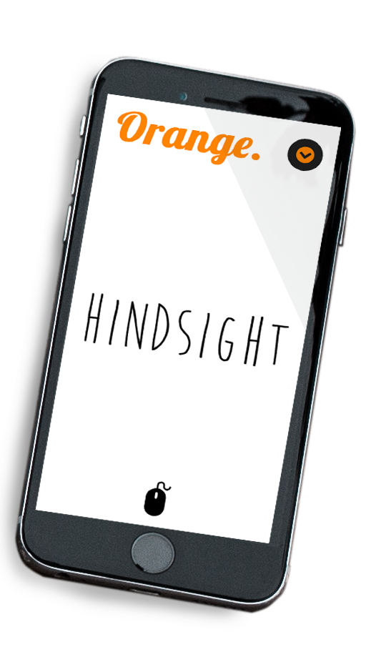
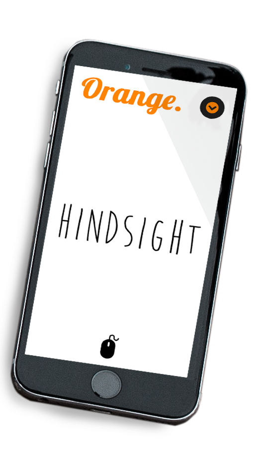

The Challenge
In response to the problem that writers face with having to search or google for rhyming words while writing, the challenge was to provide them with a simple platform where rhyming words can appear as they write.
How can we better the creative process and workflow for writers?
User and Audience
Within the scope of work I outlined, I identified three main audiences:
- -> Song writers
- -> Poets
- -> Literary writers
Early in our process, we discovered that this application would be most important to a selective group of writers. We needed to identify the personas of these types of writers and research their current working processes.
User Journey Mapping
The journey mapping involved an examination of keeping this a one page application. The key was to keep the flow simple and clear to users, but still making it interactive and fun.
User Testing
We conducted user testing with the functionality of the application developed; unconventionally late in the process of product design. However, the high feasibility of developing the application allowed for user testing to be later in the game. An analysis of the results drove us into several design cycles before finalizing the product.
Sketching and Wireframing
The goal of the home page was to create energy and vibrancy. There also needed to be a clear message as to what the application does. Intentional content and the use of relevant images would guide users to the writing page.
Conclusion
Orange was well received by classmates and professors as being fun and interactive. The clarity and user-friendly platform, with its energetic feel, lead users to even tweet their creations.